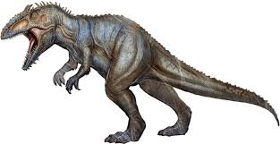

Giganotosaurus carolinii 'gigante', 'sur' y 'lagarto' 'de Carolini', el descubridor”) es la única especie conocida del género extinto Giganotosaurus de dinosaurio terópodo carcarodontosáurido, que vivió a mediados del periodo Cretácico hace aproximadamente entre 99,6 y 96 millones de años, en el Cenomaniense,1 en lo que hoy es Sudamérica.
Es uno de los mayores terópodos conocidos; se cree que alcanzaba longitudes de entre 12,3 y 13,2 metros, con un cráneo de posiblemente de más de 1,60 metros de largo y un peso aproximado de entre 7 y 8 toneladas.234 Este género ha interesado mucho a la comunidad científica y popular debido, entre otras razones, a su gran tamaño, convirtiéndose en parte de un intenso debate científico acerca los tamaños máximos que pueden alcanzar los dinosaurios terópodos. Debió ser el depredador más grande de su época, ubicándose en la cima de la cadena alimenticia. Es probable que haya depredado una amplia gama de animales saurópsidos, incluyendo hasta gigantescos saurópodos titanosaurianos. Tenía como herramienta de rastreo su agudo olfato y como principal arma de ataque sus grandes fauces dotadas de largos y achatados dientes con bordes dentados, especializados para cortar y desgarrar profundamente la carne de sus víctimas.
El descubrimiento de un esqueleto casi completo de esta especie ha entregado el material fósil suficiente para investigar en detalle algunos aspectos de su biología, como su capacidad de termorregulación y su anatomía cerebral; además de sus capacidades biomecánicas, como la fuerza de mordida y la velocidad potencial. Posiblemente se haya tratado de un organismo homeotermo y, por lo tanto, un animal con un estilo de vida activo y de crecimiento más rápido que un reptil de sangre fría.
Descripción
Basándose en el holotipo, MUCPv-CH-1, diferentes estudios a lo largo de los años han estimado al Giganotosaurus en un rango de entre 12 y 13 metros de longitud,2356 de 6,1 a 6,9 toneladas de peso,789101112 y con una altura superior a unos 4 metros hasta las caderas. La longitud del cráneo fue originalmente estimada en 1,8 metros13 pero se ha demostrado que esta reconstrucción es errónea y actualmente se estima en 1,56 metros.14 El fémur, o hueso del muslo, mide hasta 143 centímetros de largo.4 Estas mediciones permiten clasificarlo como uno de los mayores dinosaurios terópodos conocidos y ubicarlo entre los más grandes carnívoros terrestres en la historia de la Tierra.
Además, existe un segundo espécimen, MUCPv-95, conocido solo por unos fragmentos de la mandíbula izquierda, que superan comparativamente la del holotipo en un 6,5% u 8% según distintos cálculos.513 Esto podría indicar que el Giganotosaurus alcanzaba mayores tamaños. Los estimados han proyectado dimensiones de 13,2 a 13,5 metros de largo y 8,2 a 8,7 toneladas de peso.510911 Sin embargo, también se considera la posibilidad de que se trate de un espécimen del mismo tamaño, solo que con una mandíbula más robusta.
El Giganotosaurus era un depredador bípedo con un gran cráneo sostenido por un cuello poderoso, extremidades superiores cortas en proporción a su tamaño, provistas de 3 dedos terminados en garras curvas y afiladas, y extremidades inferiores poderosas. Como en los demás terópodos, el cuerpo permanecería en posición paralela al suelo y con una larga cola que le serviría de contrapeso y equilibrio. Las patas posteriores del Giganotosaurus se caracterizaban por tener un fémur más largo que la tibia, lo que indica que sus piernas lo dotaban de gran soporte pero no de gran velocidad. Esto sugiere que era un depredador de emboscada o que cazaba presas lentas, como los saurópodos. Los fósiles conocidos de esta especie corresponden a los restos óseos de la mayor parte del cuerpo, lo que permite estudiar detalladamente la mayoría sus características anatómicas
| |
|
|
| |
|
|